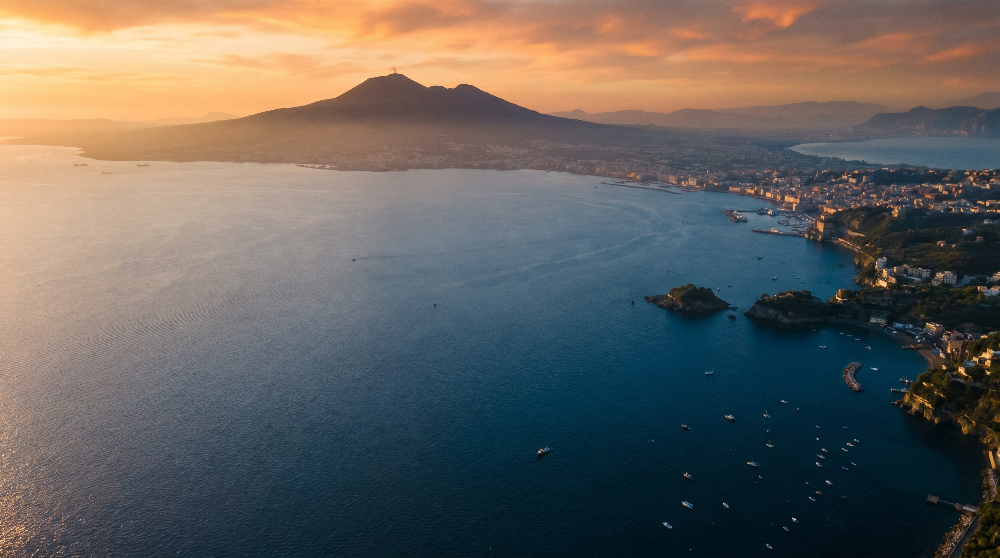
Napoli · 2500 + 100
Una ciudad cumple 2.500 años.
Su equipo de fútbol cumple 100.
La celebración empieza en otro continente.
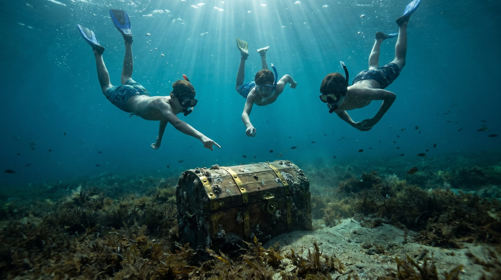
El hallazgo
Verano de 2026.
Tres chicos buceando en el Golfo encuentran los restos de un barco hundido.
Adentro, miles de cartas.
Ninguna llegó nunca a destino.
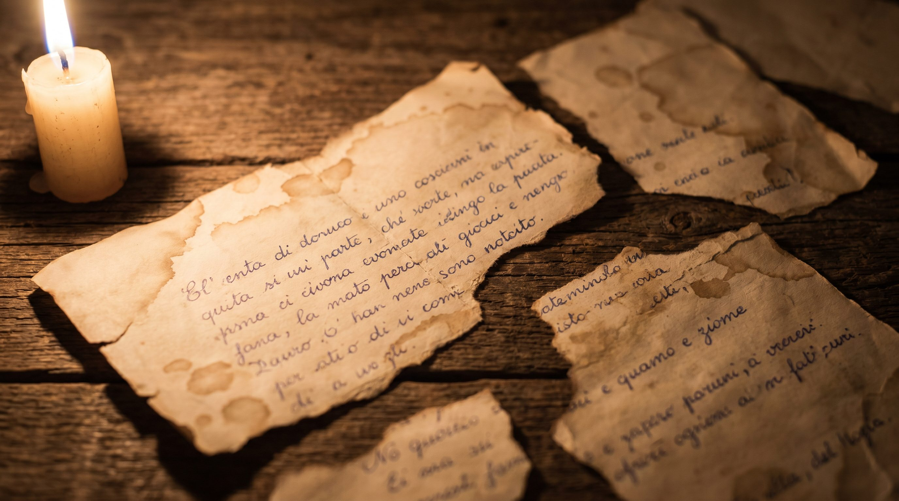
Cartas del fondo del mar
«Amore mio, l'ulivo è sopravvissuto al viaggio. L'ho piantato qui.»
«Carlota, Francesca e Romana non ce l'hanno fatta.»
«Ti mando 724 lire e tutto quello che avevo da mangiare.»
«Ho portato il pallone. I bambini qui giocano come noi.»
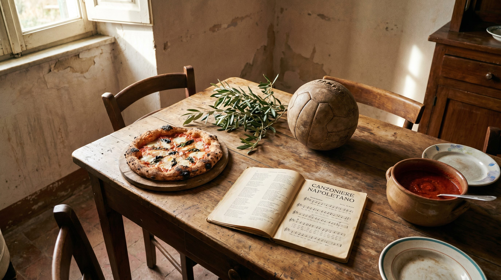
Lo que cruzó el océano
Mil cartas en el fondo del Golfo.
Cruzó el olivo. Cruzó la pelota. Cruzó la salsa. Cruzó el dialecto. Cruzó la pizza. Cruzó la canción.
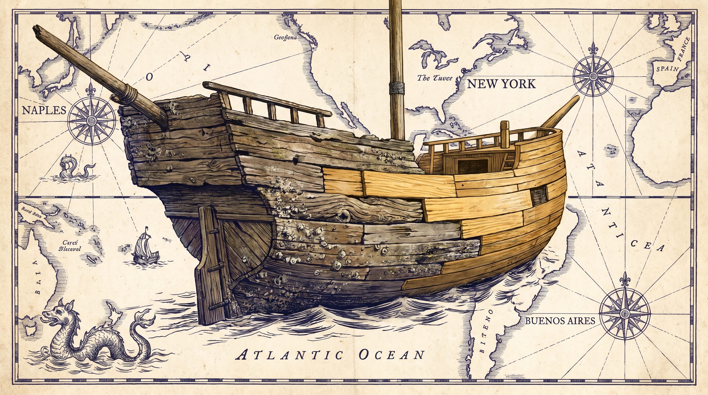
El barco de Teseo
Cuando un barco viaja tanto tiempo que se le reemplazan todas las tablas, una pregunta queda flotando.
¿Sigue siendo el mismo barco?
Napoli viajó. Sus tablas hoy están en Brooklyn, en La Paternal, en Palermo, en Belgrano.
Cada descendiente, una tabla nueva del mismo barco.
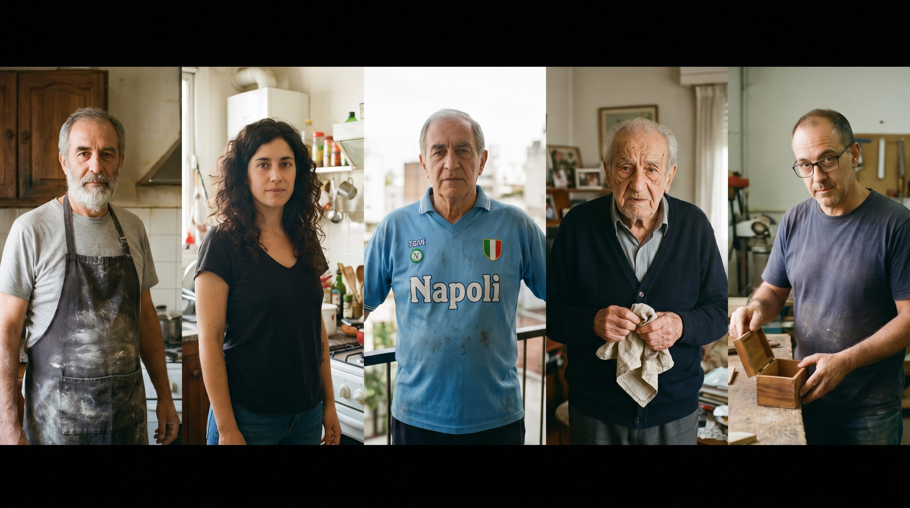
Cinco historias
El documental se cuenta desde la mesa. Desde la receta. Desde la pelota. Desde la carta mojada.
Cinco historias para abrir 2.500 años por dentro.
El pizzaiolo AVPN que abrió local en Palermo y guarda la receta de la nonna escrita en napolitano.
La nieta que nunca pisó Nápoles y prepara la misma salsa los domingos.
El tifosi de La Paternal que llora con el scudetto del 87 con el mismo nudo que con el gol a Inglaterra.
El que conoció a Diego en los ochenta y todavía guarda la servilleta firmada.
El que abre, frente a cámara, un cofre familiar de cartas reales que nunca había abierto.
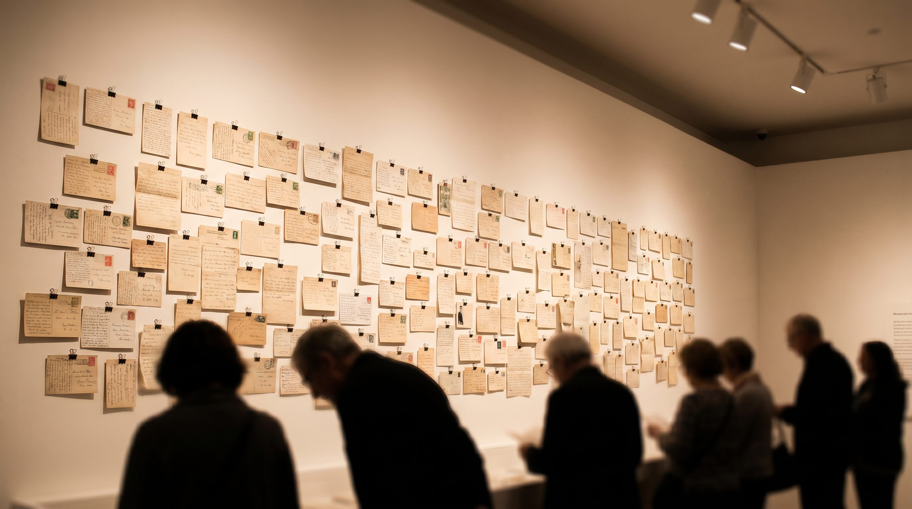
La pared
Una instalación que sigue creciendo después.
Durante el evento, el público cuelga una carta dirigida a un familiar que cruzó el océano hace cincuenta, ochenta, ciento veinte años.
La pared crece en tiempo real.
Cuando el evento termina, viaja al Museo de la Inmigración.
Sigue creciendo ahí.
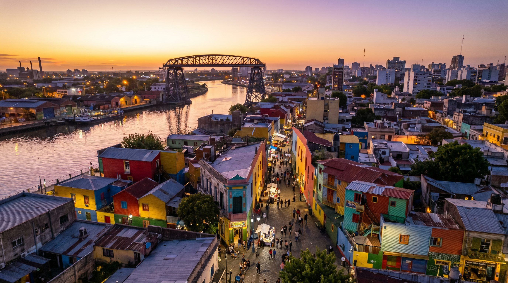
El evento
La Boca, octubre 2026.
Viernes. Cocktail institucional en el Consulado. Avant-première del cameo AI de Maradona. Prensa, autoridades, corresponsales italianos.
Sábado. La gran noche sobre el Riachuelo. Proyección del cortometraje. Concierto que cruza tango y canción napolitana, anclado en el archivo real de Gardel grabando Cuore napulitano. Muestra de las diez camisetas históricas, de Sallustro a Maradona al tricolor 2023. Pizzaiolo AVPN, productos DOP, talk con napolitanos de excelencia.
Domingo. Proyección al aire libre, entrada libre. Mate, pizza, familias enteras, abuelos con sus nietos.
Tres días, tres audiencias, tres olas de prensa.
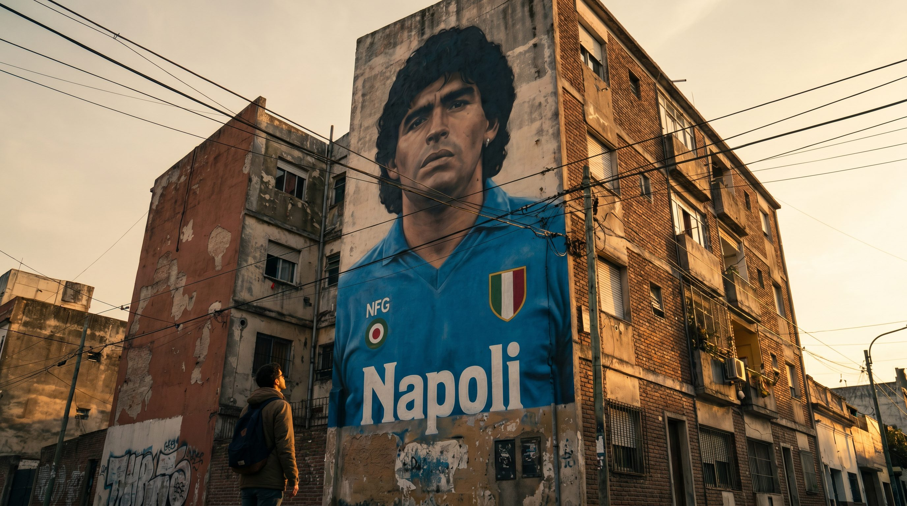
Diego
Diego está en todas partes.
Boca Juniors. Homenaje en la previa de un partido en La Bombonera.
Argentinos Juniors. El estadio se llama Diego Armando Maradona. Donde debutó en 1976.
Estadio Diego Armando Maradona, La Plata. Si octubre cae fecha FIFA.
Los murales de Martín Ron en La Paternal y Constitución. Caminata cultural con guía narrador. Autónoma.
Cuatro planes en paralelo. El que se abra primero, se ejecuta.
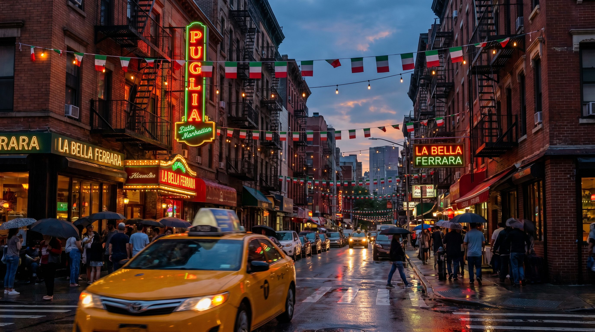
Nueva York
El documental es uno solo. La pared se replica. La narrativa funciona en las dos ciudades.
Proponemos producir también la pata Nueva York como extensión natural del mismo trabajo.
Una sola dirección creativa para América. Un solo productor ejecutivo bilingüe coordinando las dos noches. Continuidad visual y editorial entre Little Italy y La Boca.
Capítulo standalone: NEÁPOLIS — Capítulo Americano.
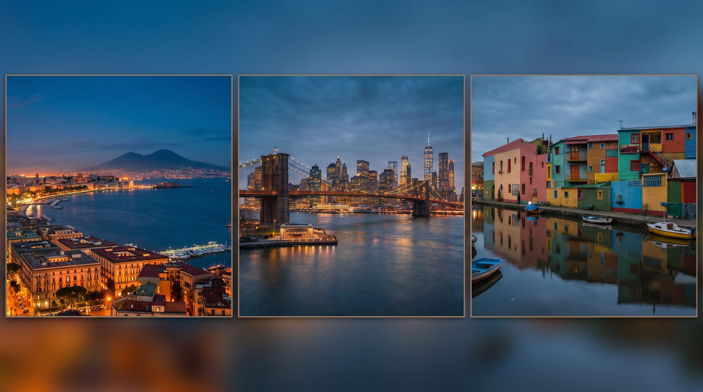
Tres ciudades. Un acto.
Napoli. Ferragosto.
New York. Septiembre.
Buenos Aires. Octubre.
Una sola obra en tres actos.
La misma pared crece en tres ciudades.
Las cartas que no llegaron en 1900 se leen en voz alta en 2026, en tres puertos a la vez.
Napoli regresa. Por primera vez, a la misma hora en tres continentes.
El alcance
El alcance, en tres líneas.
VIDEO. Scouting de quince a veinte candidatos, shortlist de doce. Rodaje en calidad cine con Sony FX9 o Alexa Mini, sonido directo profesional. B-roll en La Boca, San Telmo, Caminito, exteriores de la Bombonera, murales de Martín Ron, Hotel de Inmigrantes. Entrega de material crudo con log time-coded y transcripciones en italiano, español e inglés.
EVENTO. Producción integral del fin de semana cultural. Gestión Consulado, Asociación Napoletani BA, exploración del partner deportivo en cuatro frentes.
PR. Press kit trilingüe, mapa de medios completo, corresponsales italianos, influencers italo-argentinos, plan de comunicados escalonado en cuatro olas.
Lo que sumamos.
Capítulo Buenos Aires standalone del documental, postulable a BAFICI y Mar del Plata.
Mini-docs por personaje en formato podcast visual de diez a quince minutos. Contenido evergreen para los canales del proyecto durante todo 2027.
Archivo fílmico de la diáspora digitalizado y donable al Museo de la Inmigración.
Mural permanente en La Boca, intervención conjunta de un artista napolitano y uno boquense.
Campaña UGC pre-evento Mostrame tu Nápoles, abierta tres meses antes.
Productor ejecutivo bilingüe italiano–español como punto único de contacto con Italia.
Due diligence legal local sobre el cameo AI de Maradona antes de que se promocione.
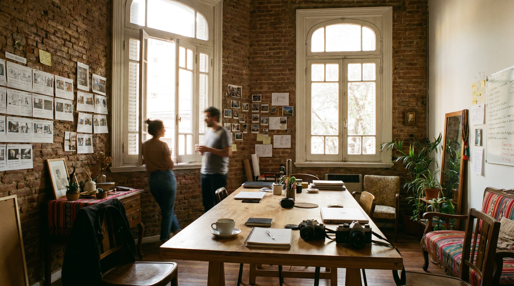
Por qué nosotros
Cuatro razones para que esto lo hagamos nosotros.
Filo. Medio de comunicación propio. Multiplica el alcance del proyecto desde adentro de la agencia.
Vínculo con Boca Juniors. Mario Pergolini en la vicepresidencia. Charlie pasó por marketing. Acceso directo a la dirigencia.
Equipo bilingüe italiano–español con manejo de la burocracia institucional italiana.
Portfolio cultural a escala. [casos concretos a seleccionar]
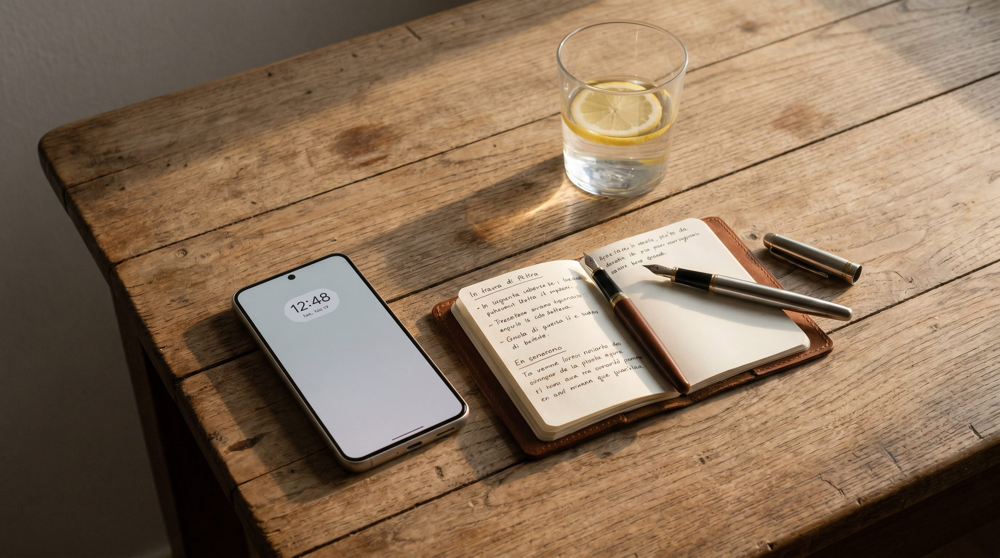
Siguiente paso
Cinco preguntas para cotizar.
Presupuesto declarado por línea.
Estado de las autorizaciones del cameo AI de Maradona.
El legacy del Consulado: quién lo produce, quién lo paga.
Las diez camisetas históricas: ¿viajan desde Italia o se replican localmente?
Contraparte único en Italia.
Una call.
Diez días después, propuesta económica en cuatro tiers.
Cuarenta días después, primer rodaje en La Boca.